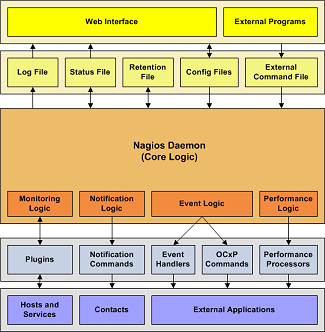

Up To: Contents
Up To: Contents
 See Also: External Commands, Passive Checks, Event Handlers, Plugins
See Also: External Commands, Passive Checks, Event Handlers, Plugins
Introduction
One of the reasons that Nagios is such a popular monitoring application is the fact that it can be easily integrated in your existing infrastructure. There are several methods of integrating Nagios with the management software you're already using and you can monitor almost any type of new or custom hardware, service, or application that you might have.
Integration Points
To monitor new hardware, services, or applications, check out the docs on:
To get data into Nagios from external applications, check out the docs on:
To send status, performance, or notification information from Nagios to external applications, check out the docs on:
Integration Examples
I've documented some examples on how to integrate Nagios with external applications: